40723111 <<
Previous Next >> 40723124
40723119
激光雷達傳感器
Lidar Sensors
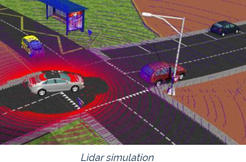
激光雷達傳感器具有五項指標性的方向
1.Ibeo LUX 激光掃描儀
2.Hokuyo 掃描機光測距儀
(Hokuyo URG-04LX 、Hokuyo URG-04LX-UG01、Hokuyo UTM-30LX)
3.Robotis 2D雷射掃描儀
(Robotis LDS-01)
4.SICK 多層掃描儀
(SICK LMS 291、SICK LD-MRS)
5.Velodyne 高分辨率實時3D傳感器
(Velodyne Puck、Velodyne HDL 32E、Velodyne HDL 64E)
----------------------------------------------------------------------------------------------------
Ibeo LUX 激光掃描儀
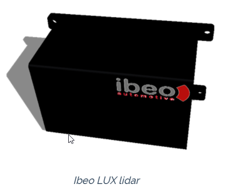
Ibeo LUX是一個4層激光雷達，射程可達200米，視野最大為110度，每次掃描每層可返回680點。 Ibeo LUX的模型包含一個球形投影，0.04米的固定分辨率和0.1米的標準偏差的高斯噪聲。
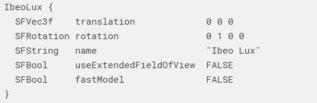
Hokuyo 掃描機光測距儀
Hokuyo URG-04LX
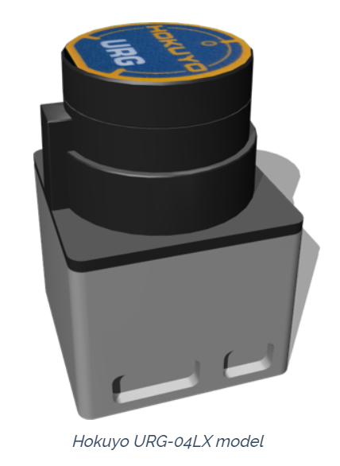
Hokuyo URG-04LX是為輕型室內機器人設計的激光雷達。
該型號具有以下規格：
視場角：240度
範圍：0.06至4.095 [m]
分辨率：667 * 0.36 [deg]
尺寸：0.05 x 0.07 x 0.05 [m]
重量：0.16 [kg]
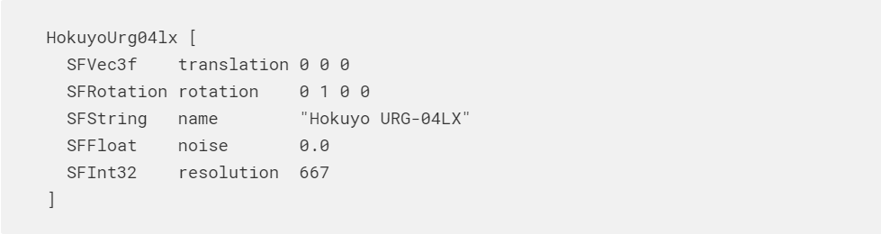
Hokuyo URG-04LX-UG01
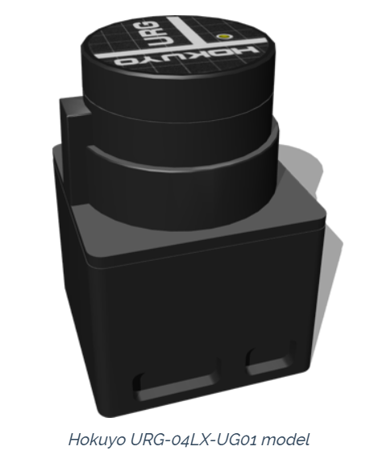
Hokuyo URG-04LX-UG01是為輕型室內機器人設計的激光雷達。該型號具有以下規格：
視場角：240度
範圍：0.2至5.6 [m]
分辨率：667 * 0.36 [deg]
尺寸：0.05 x 0.07 x 0.05 [m]
重量：0.16 [kg]
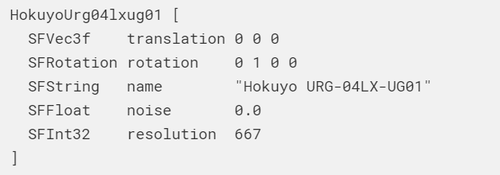
Hokuyo UTM-30LX
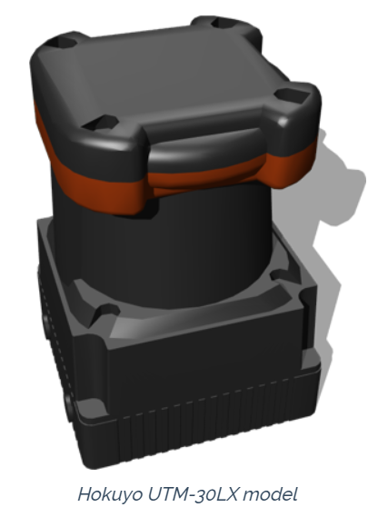
Hokuyo UTM-30LX是為高移動速度的室外機器人設計的激光雷達。該型號具有以下規格：
視場角：270 [deg]
範圍：0.1至30 [m]
分辨率：1080 * 0.25 [deg]
尺寸：0.06 x 0.087 x 0.06 [m]
重量：0.37 [kg]
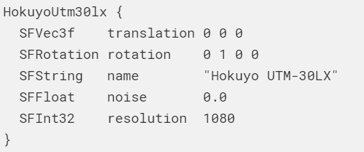
Robotis 2D雷射掃描儀
Robotis LDS-01
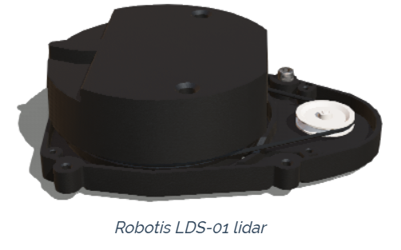
Robotis LDS-01是一個1層激光雷達，最大射程為3.5米，視野範圍最大為360度。
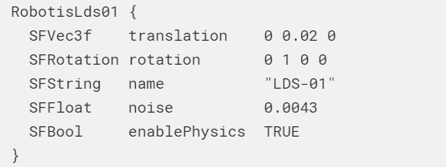
SICK 多層掃描儀
SICK LMS 291
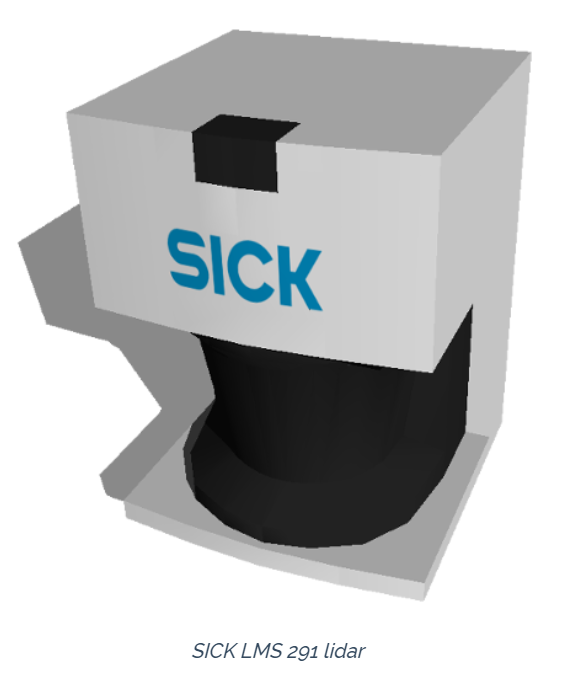
SICK LMS 291是1層激光雷達，其最大射程為80米，視野最大為180度。
SICK LMS 291的模型包含球形投影，可配置的固定分辨率和可配置的高斯噪聲。
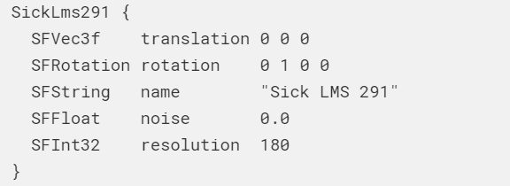
SICK LD-MRS

SICK LD-MRS是為惡劣的戶外環境設計的多層激光雷達。 SickLdMrs PROTO包含一個激光雷達節點，
該節點涵蓋了通常的主要情況。它的引用名稱（從Webots API獲取）與SickLdMrs.name字段直接匹配。
它具有以下屬性： 除800001S01類型為8外，其層數為4。 它的水平掃描範圍是85°，水平偏移7.5°。
最大範圍是300米。 每層垂直分開0.8°。 除此主要激光雷達節點外，PROTO還包含第二個激光雷達，
以便對重疊的遠程圖層進行建模。該傳感器參考名稱是由（長距離）字符串連接的SickLdMrs.name字段。
除了主激光雷達的屬性外，它還具有以下屬性： 它的水平掃描範圍是110°，
水平移動5°。 它的層數是SickLdMrs.measurementLayers除以2。 內部激光雷達的方向如下： 層0對應於底層。
第一響應值與設備權限相對應。 與真實傳感器相比，仿真模型具有以下局限性： 掃描範圍分辨率在整個掃描過程中是恆定的。
垂直方位角在整個掃描過程中是恆定的。

Velodyne 高分辨率實時3D傳感器
Velodyne Puck
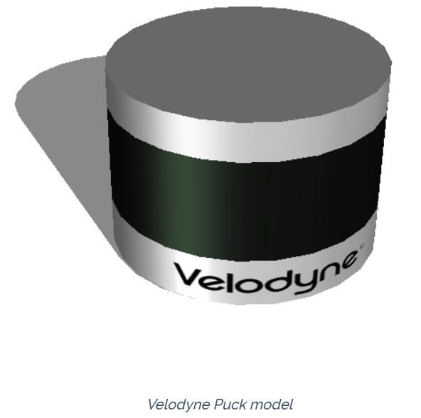
velodyne傳感器的所有型號均可用。
Velodyne冰球
Velodyne Puck是16層激光雷達，射程可達100米，視野範圍為360度，每次掃描每層返回3600點。 Velodyne冰球有3種不同的版本（可通過版本選擇）：
Puck：默認版本（也稱為Velodyne VLP-16）。
Puck LITE：PUCK的重量更輕（590gr而不是830gr）。
Puck Hi-Res：版本具有20°的垂直FoV，可實現更緊密的層分佈（層之間為1.33°，而不是2.00°）。
Velodyne冰球模型包含一個球形投影和一個高斯噪聲，標準偏差為0.03米。
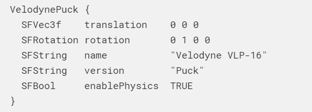
Velodyne HDL 32E
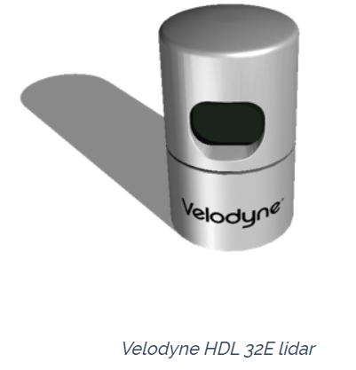
Velodyne HDL 32E是32層激光雷達，射程可達70米，視野範圍為360度，每次掃描每層返回4500點。
Velodyne HDL 32的模型包含一個標準偏差為0.02米的高斯噪聲和一個旋轉頭。
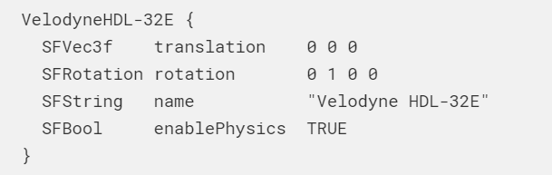
Velodyne HDL 64E
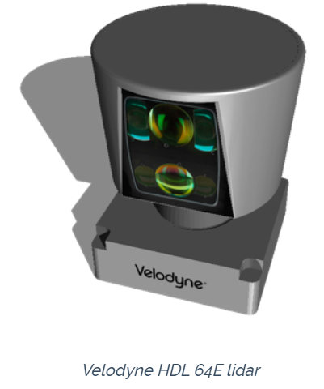
Velodyne HDL 64E是64層激光雷達，最大射程為120米，視野為360度，每次掃描每層返回4500點。
Velodyne HDL 64的模型包含一個標準偏差為0.02米的高斯噪聲和一個旋轉頭。
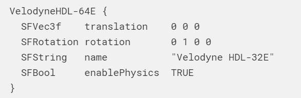
40723111 <<
Previous Next >> 40723124